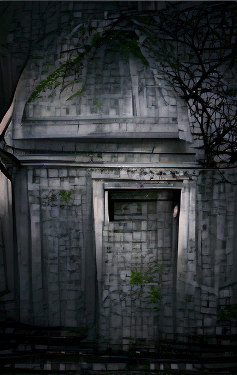
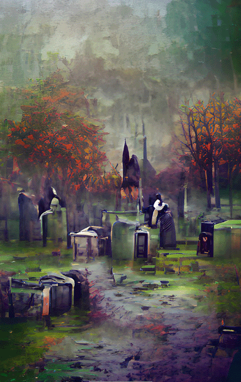
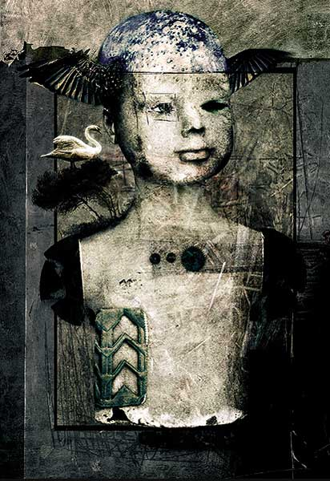
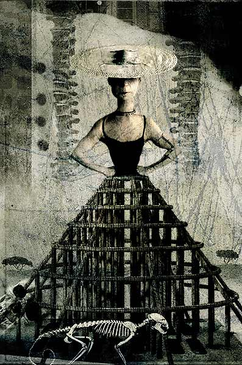
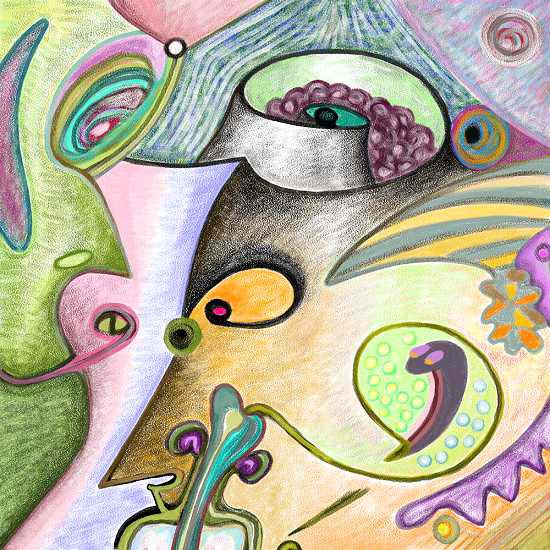

IMAGES OF THE DAY 48
10/11/2022 - 10/20/2022
Skeletal Tower
via (AI) Artificial Intelligence
10/11/2022
Click image to access Cities and Scenes Autogallery

Figure One
via (AI) Artificial Intelligence
10/12/2022
Click image to access AI Loves gallery

Mausoleum 
via (AI) Artificial Intelligence
10/13/2022
Click image to access Cities and Scenes Autogallery
Cemetary 
via (AI) Artificial Intelligence
10/14/2022
Click image to access Cities and Scenes Autogallery
Grotesque Warlord
by Helga Schmitt
10/15/2022
Click image to access artist's Autogallery exhibit

Contamination among the Arts 
Adolescent Mercury
by Alessandro Bavari
10/16/2022
Click image to access artist's full exhibit
Contamination among the Arts 
Crinoline
by Alessandro Bavari
10/17/2022
Click image to access artist's full exhibit
Contamination among the Arts
Jerome's Garden
by Alessandro Bavari
10/18/2022
Click image to access artist's full exhibit

Topsyturvy 
by Björn Dämpfling
10/19/2022
Click image to access artist's full exhibit
The Economy of Polygons
Ecce Homo
by Thomas Demuth
10/20/2022
Click image to access artist's full exhibit

BACK TO IMAGES OF THE DAY 47
NEXT